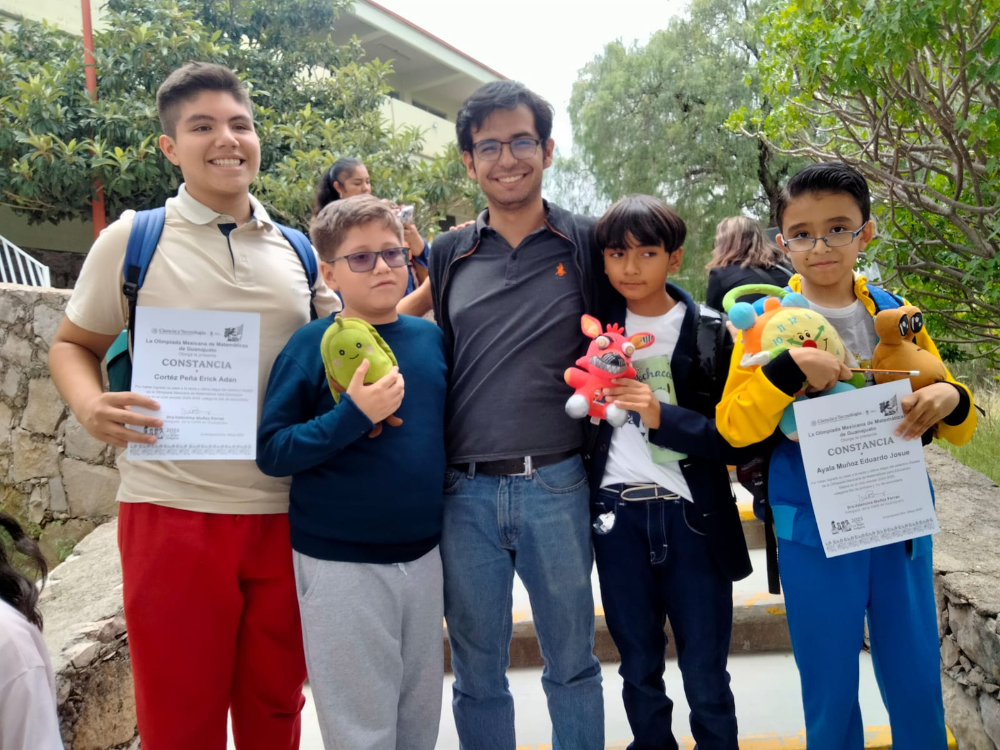
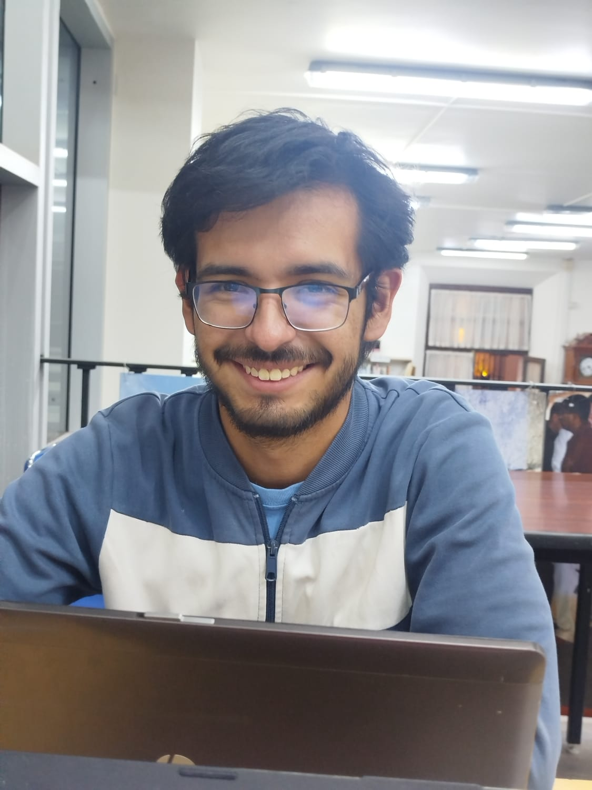
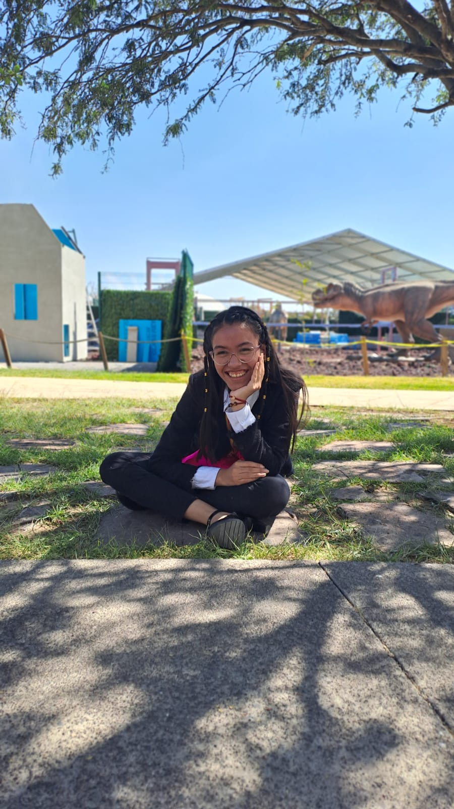
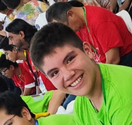
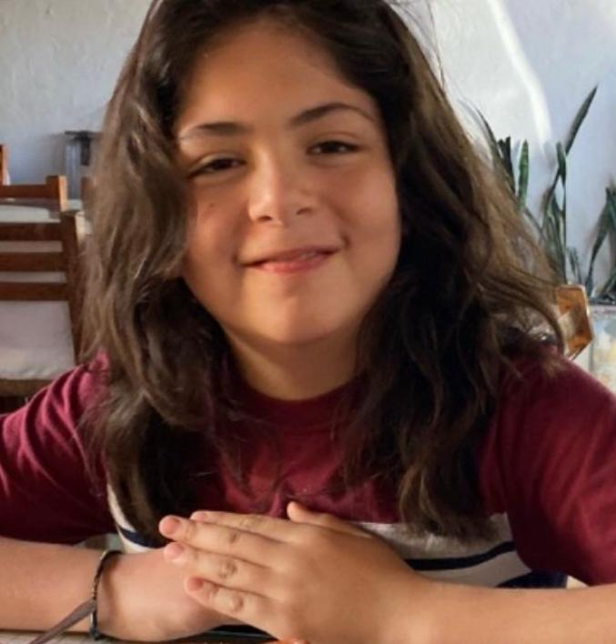
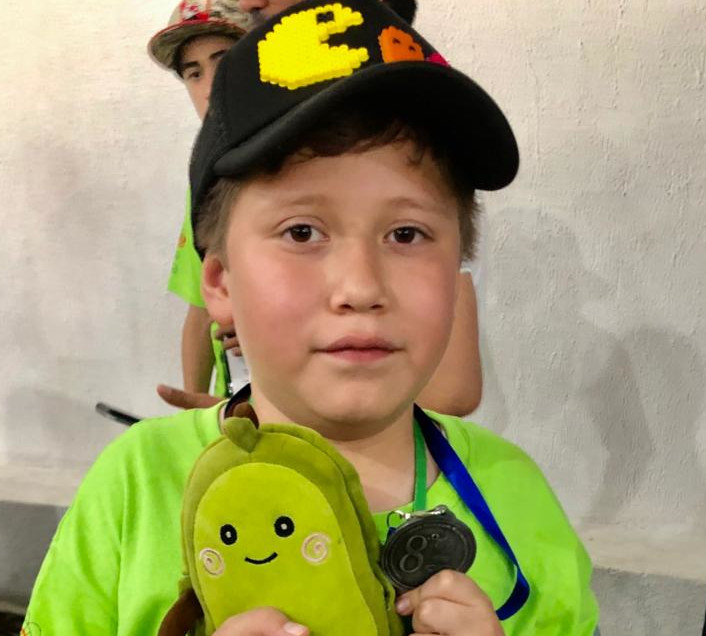

Pensamiento lógico
Aprenderás a resolver problemas usando razonamiento lógico, patrones y deducción matemática de manera divertida.
En Teorema de Becerra enseñamos a niños y niñas a pensar, razonar y amar los números a través de retos y lógica inspirada en la olimpiada matemática.
Inscríbete ahoraTeorema de Becerra es una escuela especializada en la formación de talento matemático de alto rendimiento con énfasis en la participación en olimpiadas matemáticas como la Olimpiada Mexicana de Matemáticas para Educación Básica (OMMEB), Olimpiada Nacional de Matemáticas para Alumnos de Primaria y Secundaria (ONMAPS) y Olimpiada Mexicana de Matemáticas (OMM).
Desarrollarás habilidades lógico-matemáticas a través de juegos, retos y estrategias inspiradas en la Olimpiada Mexicana de Matemáticas, adaptadas para niños. Nuestro método se enfoca en:
Aprenderás a resolver problemas usando razonamiento lógico, patrones y deducción matemática de manera divertida.

Fomentamos la imaginación y la exploración de ideas a través de juegos numéricos, acertijos y curiosidades matemáticas.

Te entrenarás para enfrentar desafíos tipo olimpiada con técnicas y estrategias propias del entrenamiento matemático avanzado.
El desarrollo del pensamiento crítico es vital para la formación de ingenios, los cuales se pierden cuando no se estimula su creatividad y entusiasmo. En Teorema de Becerra queremos moldear ese ingenio y ese entusiasmo para formar grandes mentes del mañana.
Nuestro programa está diseñado para que niños y niñas desarrollen habilidades matemáticas avanzadas mientras se divierten. Aprenden lógica, patrones, estrategias de resolución y descubren que los números pueden ser emocionantes.
Descubre cómo unirte
Entrenamiento Privado
Entrenamiento tipo olimpiada
Sesiones 1 a 1 con entrenador
Problemas adaptados al nivel
Curso de Verano
4 semanas de actividades
Retos matemáticos diarios
Material incluido
Plan Personalizado
Entrenamiento en grupo
Eventos y competencias
Talleres temáticos especiales

Entrenar para olimpiadas de matemáticas desde niño me cambió la vida. Gracias al apoyo de personas como Agustín Becerra y espacios como Teorema de Becerra, descubrí que las matemáticas no solo son retos, sino una forma de pensar y crecer. Esta escuela forma soñadores que se atreven a llegar lejos con números.

Profe Joshua es un entrenador muy empático, comprometido con sus alumnos, motivador y sobre todo un excelente maestro de lógica matemática, que nos apoya y orienta en esta apasionante ciencia.
Una de las experiencias mas importantes en mi desempeño como Olímpica Matemática ha sido el trabajo que Joshua ha realizado como mi entrenador, su capacidad de enseñanza es admirable. Nunca pongan en duda, la experiencia que tiene Joshua como entrenador de Matemáticas, el acompañamiento y los logros que ha conseguido, indudablemente lo avalan. Es extraordinario el trabajo que como entrenador realiza Joshua, porque no solamente es cuestión académica, hace que descubramos las Matemáticas desde otra perspectiva, donde todo es posible, a través de un acompañamiento integral.

He recibido varios entrenamientos de diferentes personas durante tres años y la mejor experiencia la he obtenido con el entrenador Joshua, siempre ha sido dedicado, comprometido con la materia y con nosotros los niños, a veces no lo dice, pero sabe cómo aprende y también sabe hasta dónde es capaz cada uno de nosotros, porque nos pone retos más desafiantes y nos dice que sí podemos y que nos acordemos de ciertos tips; eso me agrada mucho porque lo hace con paciencia, con gusto y es muy padre.

Joshua es un entrenador muy comprometido y entusiasta, durante 3 años ha sido él mi entrenador en la olimpiada de matemáticas. Joshua me ha ayudado a aprender muchos temas y me gusta su manera de enseñar.

Me ha gustado mucho trabajar con el maestro Joshua Gonzalez tengo gran conexión en la clase de practica y entendimiento a los temas matemáticos medios y avanzados. Estamos muy contentos con Teorema de Becerra y creemos es una gran herramienta de apoyo para el avance y comprensión de las matemáticas aplicadas rumbo a una competencia estatal y nacional. Me siento integrado en el grupo, sé que puede preguntar con la confianza de que el maestro Joshua Gonzalez tiene disponibilidad para que el tema y la práctica de problemas matemáticos tenga un cierre de comprensión y práctica. Mi familia y yo le tenemos gran aprecio y admiración al maestro Joshua González y recomendamos su método de enseñanza en Matemáticas.
El maestro Joshua, para mi es un ejemplo a seguir, me ha enseñado y guiado en este increíble mundo de las olimpiadas de matemáticas, Lo que he logrado ha sido gracias a sus enseñanzas, apoyo y motivación. Es el mejor maestro que he tenido en mi vida!


Aquí resolvemos las dudas más comunes sobre nuestros cursos de verano y entrenamientos matemáticos.
Nuestros programas están dirigidos a niñas, niños y adolescentes de entre 9 y 16 años que tengan interés o talento por las matemáticas. También contamos con entrenamientos personalizados para niveles avanzados.
Los entrenamientos privados incluyen sesiones uno a uno con un entrenador olímpico, materiales personalizados, retroalimentación continua y guía para competencias matemáticas o reforzamiento escolar. Pueden adaptarse a necesidades específicas.
Mi primer entrenador fue el profesor Agustín Becerra; él me mostró una visión de las matemáticas diferente a lo que me habían mostrado toda mi vida en la escuela. En mi entusiasmo, decidí volverme matemático, prometiéndole que un día tendría un teorema de González. Antes de que falleciera en 2021, en una de nuestras últimas conversaciones, me recordó: "Aún me debes un teorema". He aquí el Teorema de Becerra.
Con nuestros cursos y entrenamientos, aprenderás con métodos lúdicos, retos reales y acompañamiento cercano. ¡Forma parte de una comunidad que ama aprender!
Únete ahoraSi te interesa incorporarte, ¡háznoslo saber!.